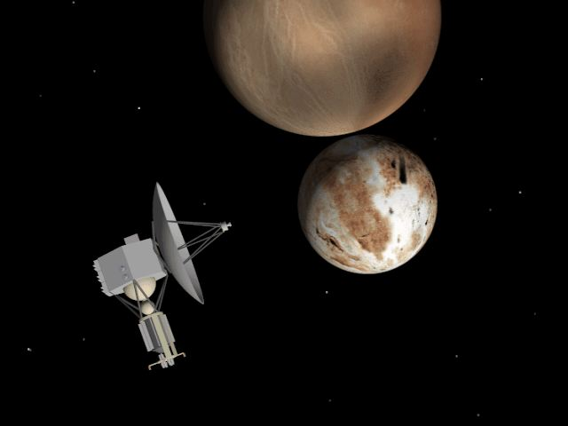
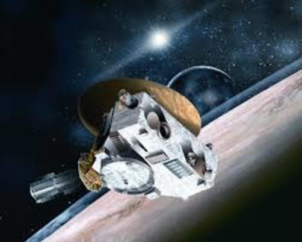
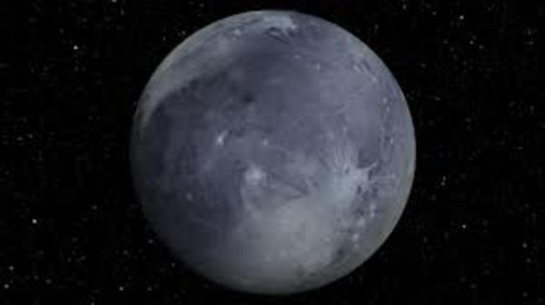
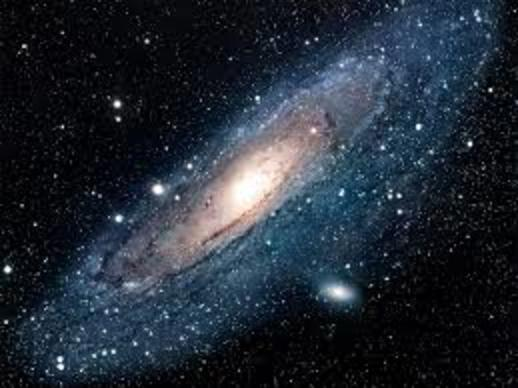

Introduction
Where do we live? Do we know anything about the inception of our existence? What is the universe? What is The Space? Do we know the responses to the above queries which perhaps arise in every human mind?
No, most part of this story is still unknown to us. Some God fearing and people with orthodox religious views believe that everything on this earth happens due to God. But, our earth is only a point of the order of some million microns compared to the size of universe. Scientists from all over the world have been trying to solve the mysteries of our universe since centuries. Many hypothesis and assumptions have been put forth, discoveries have also been made. But that is not enough compared with the scale of the unexplored universe. So, we have been trying to explore some of the farther reaches of our solar system for augmenting our idea about the universe.
NASA had started a mission a few years ago to send a space probe to Pluto. After spending millions, the space probe was created and named “NEW HORIZONS”. It was the first step in the quest for success in Mission Pluto. It is an inter planetary space probe engineered by the Johns Hopkins University Applied Physics Laboratory (APL) and the Southwest Research Institute (SwRI), with a team led by S. Alan Stern. The probe of 478kg was launched on 19 Jan 2006 from the launch site of Cape Canaveral SLC-41.
There is an interesting fact that, ”New Horizons” project started in 1990 with the ambition and objective of sending a cost effective spacecraft to Pluto. This mission was the result of inspiration from a USPS stamp that depicted Pluto as “Not Yet Explored”. But due to underwhelming response from NASA and growth of the projected cost, the mission was cancelled altogether in 2000. But,we know there is a saying ‘Failures are the pillars for success’. This adage is certainly applicable here.But after a lot of considerations, recomendations and collection of thoughts, good luck beckoned. After 3 years of construction delays and hindrance, the New Horizons was launched on 19 Jan 2006.It took 9 years,6 months and 16 days to reach the flyby of Pluto. It was a moment of exhilaration, a taste of impeccable success and a pinch of self satisfaction for the people who dedicated their lives towards this mission to discover about the dwarf planet Pluto. This mission has been a breakthrough in the world of astronomy and astrophysics, leading to the uncovering of astonishing facts about the planet and our solar system.
Some Statistics From The Mission
1. The probe clocked the fastest launch ever recorded when it blasted off in Jan 2006,exceeding 36,000 miles per hour. It passed the moon after 9 hrs and Jupiter the following year. It took just 3 mins to cross the diameter of Pluto.
2. Most spacecrafts depend on solar energy to perform the on-board operations, but at 4 billion miles away from Sun, it is quite impractical. So the probe uses nuclear energy, where plutonium gives off heat as it decays. It is customised in such a way that it can work till the 2020s.
3. While, the probe was travelling by Jupiter, it recorded a volcanic eruption on the moon of Jupiter, Io. It was the first recorded volcano eruption off the earth.
4. Pluto was discovered by Clyde Tombough in 1930.Before dying in 1997, he had requested his ashes to be sent to space. So, NASA obliged, affixing a small container with his remains to the inside upper deck of the probe. It is a matter of respect to the discoverer and astronomer.
Amazing facts right! We live in a period of time where we are in the state of transition of human lives and minds. Everyday humans create, discover or invent something in pursue of excellence and knowledge. We should feel lucky to see both the development part and then also the developing part. Pluto mission was just a small piece from the cake. Secrets are yet to be revealed, mysteries are yet to unfold.
What The Mission Means
“So, this is just the inception of evolution of mankind to a transcendental state where “FURTHER” is defined as infinity.” We are just a few steps behind achieving what was portrayed in the movie INTERSTELLAR. Mankind is going to understand the concept of the forth dimension i.e. Time, black holes and wormholes in a better way. So guys, start imagining the world after 50 years and the discoveries and breakthroughs we are going to know about in this span of time and also further. The times are not far away when it would be practical to wonder whether aliens may accept our planet Earth as their new place of habitation and live with the human beings. We cannot foresee our future, but it is an obvious fact that in near future, things are going to wind up in ways that are not expected.
